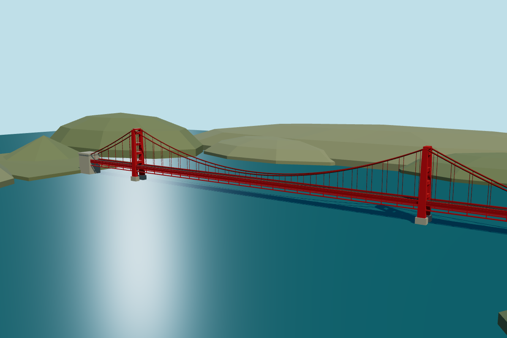

6.8/10EXPERIMENT 01 · RANK 7
Golden Gate Bridge
Geometry-first
Recognizable towers, deck and paired cables. The right approach is cropped and the sky occupies too much of the frame.
15.08s$0.0041108,443 tokens
Prompt & scoring
- Recognizability
- 8/10
- Visual finish
- 6/10
- Framing
- 4/10
- Working interaction
- 10/10
Build the Golden Gate Bridge with accurate structural hierarchy: two International Orange open-frame towers, a continuous road deck, paired sagging main cables and evenly spaced vertical hangers attached at both ends. Use a wide three-quarter viewpoint, cool ocean, distant hills and warm afternoon sun. Prioritize structural correctness over decoration. Return only a complete HTML document, without Markdown fences. Build actual 3D geometry with Three.js 0.180.0. Import * as THREE from './three.module.js'; use no other imports, external assets, images, fonts, network calls or textures. Use procedural geometry and materials. Render into a responsive full-window canvas, initially 1200x800. Set renderer pixel ratio to at most 1.5. Build native pointer drag orbit and wheel zoom controls. On resize update renderer size, camera projection and rerender. Use a carefully framed default camera with the whole monument and its top and base visible, at least 10% margin around it. Avoid obstructing the landmark with foreground objects. Use deterministic geometry. Render the finished scene immediately, then set window.sceneReady=true. No text overlays. Prioritize the visual result and working code. Keep geometry efficient. Use no animation loop unless needed for a specific effect. Avoid transparent flat fog planes. Use no more than 9000 output tokens including reasoning.API metadata